A continuación se mostraran los elementos
más populares dentro del lenguaje de estilo CSS
especificamente la versión CSS3.
Ejemplos:
The flex container
An area of a document laid out using flexbox is called a flex
container. To create a flex container, we set the value of the
area's container's display property to flex or inline-flex. As soon
as we do this the direct children of that container become flex
items. As with all properties in CSS, some initial values are
defined, so when creating a flex container all of the contained flex
items will behave in the following way.
-
Items display in a row (the flex-direction property's default is
row).
- The items start from the start edge of the main axis.
-
The items do not stretch on the main dimension, but can shrink.
- The items will stretch to fill the size of the cross axis.
- The flex-basis property is set to auto.
- The flex-wrap property is set to nowrap.
The result of this is that your items will all line up in a row,
using the size of the content as their size in the main axis. If
there are more items than can fit in the container, they will not
wrap but will instead overflow. If some items are taller than
others, all items will stretch along the cross axis to fill its full
size.
You can see in the live example below how this looks. Try editing
the items or adding additional items in order to test the initial
behavior of flexbox.

Changing flex-direction
Adding the flex-direction property to the flex container allows us
to change the direction in which our flex items display. Setting
flex-direction: row-reverse will keep the items displaying along the
row, however the start and end lines are switched.
If we change flex-direction to column the main axis switches and our
items now display in a column. Set column-reverse and the start and
end lines are again switched.
The live example below has flex-direction set to row-reverse. Try
the other values — row, column and column-reverse — to see what
happens to the content.

Multi-line flex containers with flex-wrap
While flexbox is a one dimensional model, it is possible to cause
our flex items to wrap onto multiple lines. In doing so, you should
consider each line as a new flex container. Any space distribution
will happen across that line, without reference to the lines on
either side.
To cause wrapping behavior add the property flex-wrap with a value
of wrap. Now, should your items be too large to all display in one
line, they will wrap onto another line. The live sample below
contains items that have been given a width, the total width of the
items being too wide for the flex container. As flex-wrap is set to
wrap, the items wrap. Set it to nowrap, which is also the initial
value, and they will instead shrink to fit the container because
they are using initial flexbox values that allows items to shrink.
Using nowrap would cause an overflow if the items were not able to
shrink, or could not shrink small enough to fit.
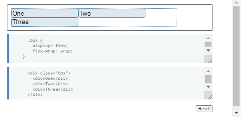
Find out more about wrapping flex items in the guide Mastering
Wrapping of Flex Items.
The flex-flow shorthand
You can combine the two properties flex-direction and flex-wrap into
the flex-flow shorthand. The first value specified is flex-direction
and the second value is flex-wrap.
In the live example below try changing the first value to one of the
allowable values for flex-direction - row, row-reverse, column or
column-reverse, and also change the second to wrap and nowrap.
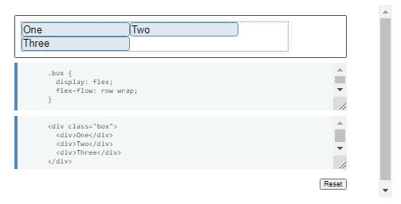
Properties applied to flex items
To have more control over flex items we can target them directly. We
do this by way of three properties:
- flex-grow
- flex-shrink
- flex-basis
We will take a brief look at these properties in this overview, and
you can gain a fuller understanding in the guide Controlling Ratios
of Flex Items on the Main Axis.
Before we can make sense of these properties we need to consider the
concept of available space. What we are doing when we change the
value of these flex properties is to change the way that available
space is distributed amongst our items. This concept of available
space is also important when we come to look at aligning items.
If we have three 100 pixel-wide items in a container which is 500
pixels wide, then the space we need to lay out our items is 300
pixels. This leaves 200 pixels of available space. If we don't
change the initial values then flexbox will put that space after the
last item.

If we instead would like the items to grow and fill the space, then
we need to have a method of distributing the leftover space between
the items. This is what the flex properties that we apply to the
items themselves, will do.
The flex-basis property
The flex-basis is what defines the size of that item in terms of the
space it leaves as available space. The initial value of this
property is auto — in this case the browser looks to see if the
items have a size. In the example above, all of the items have a
width of 100 pixels and so this is used as the flex-basis.
If the items don't have a size then the content's size is used as
the flex-basis. This is why when we just declare display: flex on
the parent to create flex items, the items all move into a row and
take only as much space as they need to display their contents.
The flex-grow property
With the flex-grow property set to a positive integer, flex items
can grow along the main axis from their flex-basis. This will cause
the item to stretch and take up any available space on that axis, or
a proportion of the available space if other items are allowed to
grow too.
If we gave all of our items in the example above a flex-grow value
of 1 then the available space in the flex container would be equally
shared between our items and they would stretch to fill the
container on the main axis.
The flex-grow property can be used to distribute space in
proportion. If we give our first item a flex-grow value of 2, and
the other items a value of 1 each, 2 parts of the available space
will be given to the first item (100px out of 200px in the case of
the example above), 1 part each the other two (50px each out of the
200px total).
The flex-shrink property
Where the flex-grow property deals with adding space in the main
axis, the flex-shrink property controls how it is taken away. If we
do not have enough space in the container to lay out our items, and
flex-shrink is set to a positive integer, then the item can become
smaller than the flex-basis. As with flex-grow, different values can
be assigned in order to cause one item to shrink faster than others
— an item with a higher value set for flex-shrink will shrink faster
than its siblings that have lower values.
The minimum size of the item will be taken into account while
working out the actual amount of shrinkage that will happen, which
means that flex-shrink has the potential to appear less consistent
than flex-grow in behavior. We'll therefore take a more detailed
look at how this algorithm works in the article Controlling Ratios
of items along the main axis.
You will very rarely see the flex-grow, flex-shrink, and flex-basis
properties used individually; instead they are combined into the
flex shorthand. The flex shorthand allows you to set the three
values in this order — flex-grow, flex-shrink, flex-basis.
The live example below allows you to test out the different values
of the flex shorthand; remember that the first value is flex-grow.
Giving this a positive value means the item can grow. The second is
flex-shrink — with a positive value the items can shrink, but only
if their total values overflow the main axis. The final value is
flex-basis; this is the value the items are using as their base
value to grow and shrink from.
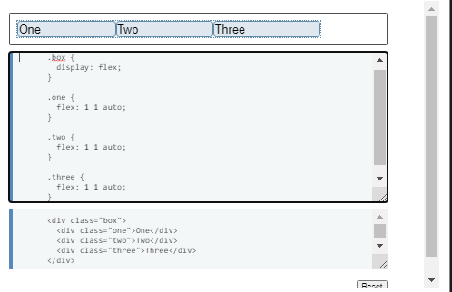
There are also some predefined shorthand values which cover most of
the use cases. You will often see these used in tutorials, and in
many cases these are all you will need to use. The predefined values
are as follows:
- flex:inital
- flex:auto
- flex:none
- flex: positive nomber
Setting flex: initial resets the item to the initial values of
Flexbox. This is the same as flex: 0 1 auto. In this case the value
of flex-grow is 0, so items will not grow larger than their
flex-basis size. The value of flex-shrink is 1, so items can shrink
if they need to rather than overflowing. The value of flex-basis is
auto. Items will either use any size set on the item in the main
dimension, or they will get their size from the content size.
Using flex: auto is the same as using flex: 1 1 auto; everything is
as with flex:initial but in this case the items can grow and fill
the container as well as shrink if required.
Using flex: none will create fully inflexible flex items. It is as
if you wrote flex: 0 0 auto. The items cannot grow or shrink but
will be laid out using flexbox with a flex-basis of auto.
The shorthand you often see in tutorials is flex: 1 or flex: 2 and
so on. This is as if you used flex: 1 1 0 or flex: 2 1 0 and so on,
respectively. The items can grow and shrink from a flex-basis of 0.
Try these shorthand values in the live example below.

Alignment, justification and distribution of free space between
items
A key feature of flexbox is the ability to align and justify items
on the main- and cross-axes, and to distribute space between flex
items. Note that these properties are to be set on the flex
container, not on the items themselves.
align-items
The align-items property will align the items on the cross axis.
The initial value for this property is stretch and this is why flex
items stretch to the height of the flex container by default. This
might be dictated by the height of the tallest item in the
container, or by a size set on the flex container itself.
You could instead set align-items to flex-start in order to make the
items line up at the start of the flex container, flex-end to align
them to the end, or center to align them in the center. Try this in
the live example — I have given the flex container a height in order
that you can see how the items can be moved around inside the
container. See what happens if you set the value of align-items to:
- stretch
- flex-start
- flex-end
- center
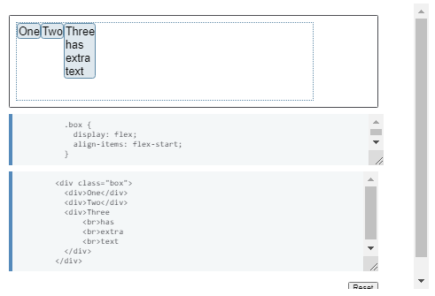
justify-content
The justify-content property is used to align the items on the main
axis, the direction in which flex-direction has set the flow. The
initial value is flex-start which will line the items up at the
start edge of the container, but you could also set the value to
flex-end to line them up at the end, or center to line them up in
the center.
You can also use the value space-between to take all the spare space
after the items have been laid out, and share it out evenly between
the items so there will be an equal amount of space between each
item. To cause an equal amount of space on the right and left of
each item use the value space-around. With space-around, items have
a half-size space on either end. Or, to cause items to have equal
space around them use the value space-evenly. With space-evenly,
items have a full-size space on either end.
- flex-start
- flex-end
- center
- space-around
- space-between
- space-evenly
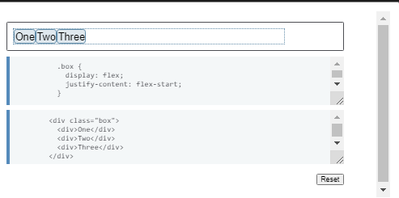
In the article Aligning Items in a Flex Container we will explore
these properties in more depth, in order to have a better
understanding of how they work. These simple examples however will
be useful in the majority of use cases.
Relationship of flexbox to other layout methods
In this article we will take a look at how Flexbox fits in with all
the other CSS modules. We'll find out which specifications you also
need to take notice of if you want to learn flexbox, and find out
why flexbox is different to some other modules.
The box alignment module
For many people the first reason they start to look at flexbox is
because of the ability to properly align flex items inside a flex
container. Flexbox provides access to properties that allow the
alignment of items on their cross axis and justification of items on
the main axis.
These properties started life in the flexbox specification, but are
now also part of the Box Alignment Specification. This specification
details how alignment works in all layout — not just flexbox. Box
alignment deals with alignment and justification, including creating
gaps or gutters between flex items.
The reason that the Box alignment properties remain detailed in the
flexbox specification as well as being in box alignment is to ensure
that completion of the flexbox spec is not held up by box alignment,
which has to detail these methods for all layout types. There is a
note in the flexbox spec stating that in the future, once it is
completed, the definitions in Box Alignment Level 3 will supersede
those of flexbox:
"Note: While the alignment properties are defined in CSS Box
Alignment [CSS-ALIGN-3], Flexible Box Layout reproduces the
definitions of the relevant ones here so as to not create a
normative dependency that may slow down advancement of the spec.
These properties apply only to flex layout until CSS Box Alignment
Level 3 is finished and defines their effect for other layout
modes. Additionally, any new values defined in the Box Alignment
module will apply to Flexible Box Layout; in other words, the Box
Alignment module, once completed, will supersede the definitions
here."
In a later article in this series — Aligning items in a flex
container — we will take a thorough look at how the Box Alignment
properties apply to flex items.
Writing modes
In the Basic concepts of flexbox article, I explained that flexbox
is writing mode aware. Writing modes are fully detailed in the CSS
Writing Modes specification, which details how CSS supports the
various different writing modes that exist internationally. We need
to be aware of how this will impact our flex layouts as writing mode
changes the direction that blocks are laid out in our document.
Understanding block and inline directions is key to new layout
methods.
It is worth noting that we might want to change the writing mode of
our document for reasons other than publishing content in a language
that uses a different writing mode. See this article for a full
description of writing modes and ways to use them, both for content
in other languages and for creative reasons.
the writing modes
The writing modes specification defines the following values of the
writing-mode property, which serve to change the direction that
blocks are laid out on the page, to match the direction that blocks
lay out when content is formatted in that particular writing mode.
You can change the live example below to these modes in order to see
what happens to the flex layout.
- horizontal-tb
- vertical-rl
- vertical-lr
- sideways-rl
- sideways-lr

Note that sideways-rl and sideways-lr have support only in Firefox
currently. There are also some known issues with regard to
writing-mode and flexbox. You can see more information on browser
support in the MDN documentation for writing-mode. However if you
are planning on using writing modes in your layout, carefully
testing the results is advisable — not least because it would be
easy to make things hard to read!
Note that you would not normally use CSS and the writing-mode
property to change an entire document to another writing mode. This
would be done via HTML, by adding a dir and lang attribute to the
html element to indicate the document language and default text
direction. This would mean that the document would display correctly
even if CSS did not load.
Flexbox and other layout methods
The flexbox specification contains a definition of what happens if
an item uses another layout method and then becomes a flex item. For
example, if an item is floated and then its parent becomes a flex
container. Or, how a flex container behaves as part of layout.
An element set to display: flex behaves in most ways like any other
block level container that establishes a containing block. Floats
will not intrude, and the containers' margins will not collapse.
With regard to flex items, if an item was floated or cleared and
then becomes a flex item due to the parent having display: flex
applied, the floating and clearing will no longer happen, and the
item will not be taken out of normal flow in the way that floats
are. If you have used the vertical-align property, as used with
inline-block or table layout for alignment, this will no longer
affect the item and you can use the alignment properties of flexbox
instead.
In this next live example the child elements have been floated, and
then their container has had display: flex added. If you remove
display: flex, you should see that the .box element collapses as we
have no clearing applied. This demonstrates that the float is
happening. Re-apply display: flex and the collapsing does not
happen. This is because the items no longer have a float applied, as
they have been transformed into flex items.

Flexbox and Grid Layout
CSS Grid Layout and Flexbox generally act in the same way with
regards to overwriting other methods. You might however want to use
flexbox as a fallback for grid layout, as there is better support
for flexbox in older browsers. This approach works very well. If a
flex item becomes a grid item, then the flex properties that may
have been assigned to the child elements will be ignored.
You can use the Box Alignment properties across both layout methods,
so using flexbox as a fallback for grid layout can work very well.
Flex and grid — what's the difference?
A common question is to ask what the difference is between Flexbox
and CSS Grid Layout — why do we have two specifications that
sometimes appear to be doing the same thing?
The most straightforward answer to this question is defined in the
specifications themselves. Flexbox is a one-dimensional layout
method whereas Grid Layout is a two-dimensional layout method. The
example below has a flex layout. As already described in the Basic
concepts article, flex items can be allowed to wrap but, once they
do so, each line becomes a flex container of its own. When space is
distributed flexbox does not look at the placement of items in other
rows and tries to line things up with each other.

If we create a very similar layout using Grid, we can control the
layout in both rows and columns.
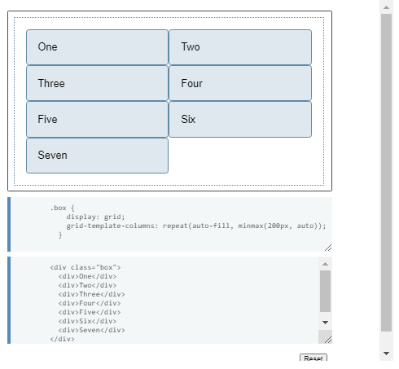
These examples point to another key difference between these layout
methods. In Grid Layout you do the majority of sizing specification
on the container, setting up tracks and then placing items into
them. In flexbox, while you create a flex container and set the
direction at that level, any control over item sizing needs to
happen on the items themselves.
In some cases you could happily use either layout method, but as you
become confident with both you will find each one suiting different
layout needs, and you will end up with both methods in your CSS.
There is rarely a right or wrong answer.
As a rule of thumb, if you are adding widths to flex items in order
to make items in one row of a wrapped flex container line up with
the items above them you really want two-dimensional layout. In this
case it is likely that the component would be better laid out using
CSS Grid Layout. It isn't the case that you should use flexbox for
small components and grid layout for larger ones; a tiny component
can be two dimensional, and a large layout can be represented better
with layout in one dimension. Try things out — we have a choice in
layout method for the first time, so take advantage of it.
For more comparisons of grid and flexbox see the article
Relationship of Grid Layout to other layout methods. This article
details many of the ways that Grid Layout differs from flex layout,
and demonstrates some of the extra functionality you get when using
Grid Layout such as layering of items on the grid. This may also
help in your decision as to which layout method to use.
Flexbox and display: contents
The contents value of the display property is a new value that is
described in the spec as follows:
"The element itself does not generate any boxes, but its children
and pseudo-elements still generate boxes as normal. For the
purposes of box generation and layout, the element must be treated
as if it had been replaced with its children and pseudo-elements
in the document tree."
This value of display controls box generation, and whether the
element should generate a box that we can style and see on the page,
or whether instead the box it would normally create should be
removed and the child elements essentially moved up to participate
in whatever layout method the parent would have been part of. This
is much easier to see with an example.
In the following live example I have a flex container with three
child elements. One of these flex items has two elements nested
inside it, which would not ordinarily participate in flex layout.
Flex layout only applies to the direct children of a flex container.
By adding display: contents to the wrapper around the nested
elements, you can see that the item has disappeared from the layout,
allowing the two sub-children to be laid out as if they were direct
children of the flex container. You can try removing the display:
contents line to see it return.
Note that this only removes the box from the layout; the
sub-children don't become direct children in any other way. You can
see that as I have used a direct child selector to add the
background and borders to the flex items, this has not been applied
to our nested children. They have been laid out as flex items, but
as they are not direct children they do not get the other styling.
Warning: Current implementations in most browsers will remove any
element with display: contents from the accessibility tree (but
descendants will remain). This will cause the element itself to no
longer be announced by screen reading technology. This is incorrect
behavior according to the specification, see display: contents.
Also, having removed the box you cannot then use it to — for example
— add a background color behind the nested sub children. If you
remove display: contents in this live example you will see that the
direct child we are removing has an orange background color. This
also disappears when the box disappears.

Browser support for display:contents is limited and required for
this demo to work. Firefox supports display: contents already, and
the value is being implemented in Chrome. Once there is better
browser support this feature will be very useful in circumstances
where you need the markup for semantic reasons but do not want to
display the box that it would generate by default.
Aligning Items in a Flex Container
One of the reasons that flexbox quickly caught the interest of web
developers is that it brought proper alignment capabilities to the
web for the first time. It enabled proper vertical alignment, so we
can at last easily center a box. In this guide, we will take a
thorough look at how the alignment and justification properties work
in Flexbox.
To center our box we use the align-items property to align our item
on the cross axis, which in this case is the block axis running
vertically. We use justify-content to align the item on the main
axis, which in this case is the inline axis running horizontally.

You can take a look at the code of this example below. Change the
size of the container or nested element and the nested element
always remains centered.

Properties that control alignment
The properties we will look at in this guide are as follows.
-
justify-content — controls alignment of all items on the main
axis.
-
align-items — controls alignment of all items on the cross axis.
-
align-self — controls alignment of an individual flex item on the
cross axis.
-
align-content — described in the spec as for "packing flex lines";
controls space between flex lines on the cross axis.
-
gap, column-gap, and row-gap — used to create gaps or gutters
between flex items.
We will also discover how auto margins can be used for alignment in
flexbox.
The Cross Axis
The align-items and align-self properties control alignment of our
flex items on the cross axis, down the columns if flex-direction is
row and along the row if flex-direction is column.
We are making use of cross-axis alignment in the most simple flex
example. If we add display: flex to a container, the child items all
become flex items arranged in a row. They will all stretch to be as
tall as the tallest item, as that item is defining the height of the
items on the cross axis. If your flex container has a height set,
then the items will stretch to that height, regardless of how much
content is in the item.


The reason the items become the same height is that the initial
value of align-items, the property that controls alignment on the
cross axis, is set to stretch.
We can use other values to control how the items align:
- align-items: flex-start
- align-items: flex-end
- align-items: center
- align-items: stretch
- align-items: baseline
In the live example below, the value of align-items is stretch. Try
the other values and see how all of the items align against each
other in the flex container.
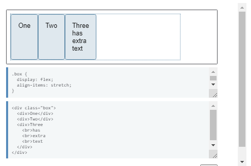
Aligning one item with align-self
The align-items property sets the align-self property on all of the
flex items as a group. This means you can explicitly declare the
align-self property to target a single item. The align-self property
accepts all of the same values as align-items plus a value of auto,
which will reset the value to that which is defined on the flex
container.
In this next live example, the flex container has align-items:
flex-start, which means the items are all aligned to the start of
the cross axis. I have targeted the first item using a first-child
selector and set that item to align-self: stretch; another item has
been selected using its class of selected and given align-self:
center. You can change the value of align-items or change the values
of align-self on the individual items to see how this works.

Changing the main axis
So far we have looked at the behavior when our flex-direction is
row, and while working in a language written top to bottom. This
means that the main axis runs along the row horizontally, and our
cross axis alignment moves the items up and down.

If we change our flex-direction to column, align-items and
align-self will align the items to the left and right.

You can try this out in the example below, which has a flex
container with flex-direction: column yet otherwise is exactly the
same as the previous example.
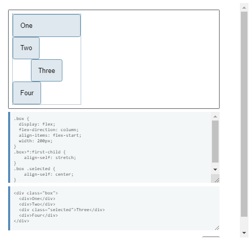
Aligning content on the cross axis — the align-content property
So far we have been aligning the items, or an individual item inside
the area defined by the flex-container. If you have a wrapped
multiple-line flex container then you might also want to use the
align-content property to control the distribution of space between
the rows. In the specification this is described as packing flex
lines.
For align-content to work you need more height in your flex
container than is required to display the items. It then works on
all the items as a set, and dictates what happens with that free
space, and the alignment of the entire set of items within it.
The align-content property takes the following values:
- align-content: flex-start
- align-content: flex-end
- align-content: center
- align-content: space-between
- align-content: space-around
- align-content: stretch
-
align-content: space-evenly (not defined in the Flexbox
specification)
In the live example below, the flex container has a height of 400
pixels, which is more than needed to display our items. The value of
align-content is space-between, which means that the available space
is shared out between the flex lines, which are placed flush with
the start and end of the container on the cross axis.
Try out the other values to see how the align-content property
works.

Once again we can switch our flex-direction to column in order to
see how this property behaves when we are working by column. As
before, we need enough space in the cross axis to have some free
space after displaying all of the items.

Note: The value space-evenly is not defined in the flexbox
specification and is a later addition to the Box Alignment
specification. Browser support for this value is not as good as that
of the values defined in the flexbox spec.
Aligning content on the main axis
Now that we have seen how alignment works on the cross axis, we can
take a look at the main axis. Here we only have one property
available to us — justify-content. This is because we are only
dealing with items as a group on the main axis. With justify-content
we control what happens with available space, should there be more
space than is needed to display the items.
In our initial example with display: flex on the container, the
items display as a row and all line up at the start of the
container. This is due to the initial value of justify-content being
flex-start. Any available space is placed at the end of the items.
The justify-content property accepts the same values as
align-content.
- justify-content: flex-start
- justify-content: flex-end
- justify-content: center
- justify-content: space-between
- justify-content: space-around
-
justify-content: space-evenly (not defined in the Flexbox
specification)
In the example below, the value of justify-content is space-between.
The available space after displaying the items is distributed
between the items. The left and right item line up flush with the
start and end.
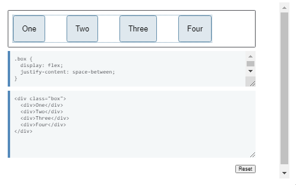
If the main axis is in the block direction because flex-direction is
set to column, then justify-content will distribute space between
items in that dimension as long as there is space in the flex
container to distribute.

Alignment and Writing Modes
Remember that with all of these alignment methods, the values of
flex-start and flex-end are writing mode-aware. If the value of
justify-content is flex-start and the writing mode is left-to-right
as in English, the items will line up starting at the left side of
the container.

However if the writing mode is right-to-left as in Arabic, the items
will line up starting at the right side of the container.

The live example below has the direction property set to rtl to
force a right-to-left flow for our items. You can remove this, or
change the values of justify-content to see how flexbox behaves when
the start of the inline direction is on the right.
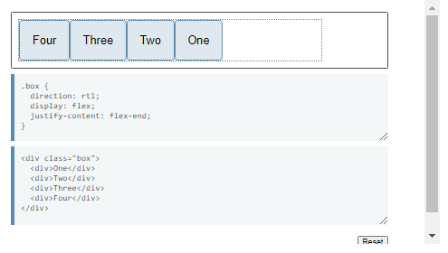
Alignment and flex-direction
The start line will also change if you change the flex-direction
property — for example using row-reverse instead of row.
In this next example I have items laid out with flex-direction:
row-reverse and justify-content: flex-end. In a left to right
language the items all line up on the left. Try changing
flex-direction: row-reverse to flex-direction: row. You will see
that the items now move to the right-hand side.

While this may all seem a little confusing, the rule to remember is
that unless you do something to change it, flex items lay themselves
out in the direction that words are laid out in the language of your
document along the inline, row axis. flex-start will be where the
start of a sentence of text would begin.

You can switch them to display in the block direction for the
language of your document by selecting flex-direction: column. Then
flex-start will then be where the top of your first paragraph of
text would start.
If you change flex-direction to one of the reverse values, then they
will lay themselves out from the end axis and in the reverse order
to the way words are written in the language of your document.
flex-start will then change to the end of that axis — so to the
location where your lines would wrap if working in rows, or at the
end of your last paragraph of text in the block direction.


Using auto margins for main axis alignment
We don't have a justify-items or justify-self property available to
us on the main axis as our items are treated as a group on that
axis. However it is possible to do some individual alignment in
order to separate an item or a group of items from others by using
auto margins along with flexbox.
A common pattern is a navigation bar where some key items are
aligned to the right, with the main group on the left. You might
think that this should be a use case for a justify-self property,
however consider the image below. I have three items on one side and
two on the other. If I were able to use justify-self on item d, it
would also change the alignment of item e that follows, which may or
may not be my intention.

Instead we can target item 4 and separate it from the first three
items by giving it a margin-left value of auto. Auto margins will
take up all of the space that they can in their axis — it is how
centering a block with margin auto left and right works. Each side
tries to take as much space as it can, and so the block is pushed
into the middle.
In this live example, I have flex items arranged into a row with the
basic flex values, and the class push has margin-left: auto. You can
try removing this, or adding the class to another item to see how it
works.

Creating gaps between items
To create a gap between flex items, use the gap, column-gap, and
row-gap properties. The column-gap property creates gaps between
items on the main axis. The row-gap property creates gaps between
flex lines, when you have flex-wrap set to wrap. The gap property is
a shorthand that sets both together.

Ordering Flex Items
New layout methods such as Flexbox and Grid bring with them the
possibility of controlling the order of content. In this article, we
will take a look at ways in which you can change the visual order of
your content when using Flexbox. We will also consider the
implications of reordering items from an accessibility point of
view.
Reverse the display of the items
the flex-direction property can take one of four values:
- row
- column
- row-reverse
- column-reverse
The first two values keep the items in the same order that they
appear in the document source order and display them sequentially
from the start line.


The second two values reverse the items by switching the start and
end lines.


Remember that the start line relates to writing modes. The
row-related examples above demonstrate how row and row-reverse work
in a left-to-right language such as English. If you are working in a
right-to-left language like Arabic then row would start on the
right, row-reverse on the left.
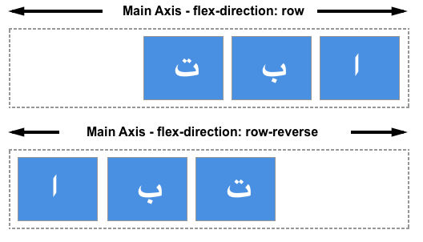
This can seem like a neat way to display things in reverse order
however you should be mindful that the items are only visually
displayed in reverse order. The specification says the following on
this matter:
"Note: The reordering capabilities of flex layout intentionally
affect only the visual rendering, leaving speech order and
navigation based on the source order. This allows authors to
manipulate the visual presentation while leaving the source order
intact for non-CSS UAs and for linear models such as speech and
sequential navigation." - Ordering and Orientation
If your items were links or some other element that the user could
tab to, then the tabbing order would be the order that these items
appear in the document source — not your visual order.
If you are using a reverse value, or otherwise reordering your
items, you should consider whether you actually need to change the
logical order in the source. The specification continues with a
warning not to use reordering to fix issues in your source:
"Authors must not use order or the *-reverse values of
flex-flow/flex-direction as a substitute for correct source
ordering, as that can ruin the accessibility of the document."
Note: For some years Firefox had a bug whereby it would attempt to
follow the visual order and not the source order, making it behave
differently from other browsers. This has now been fixed. You should
always take the source order as the logical order of the document as
all up-to-date user agents will be following the specification and
doing so.
In the live example below I have added a focus style in order that
as you tab from link to link you can see which is highlighted. If
you change the order using flex-direction you can see how the tab
order continues to follow the order that the items are listed in the
source.
In the same way that changing the value of flex-direction does not
change the order in which items are navigated to, changing this
value does not change paint order. It is a visual reversal of the
items only.
The order property
In addition to reversing the order in which flex items are visually
displayed, you can target individual items and change where they
appear in the visual order with the order property.
The order property is designed to lay the items out in ordinal
groups. What this means is that items are assigned an integer that
represents their group. The items are then placed in the visual
order according to that integer, lowest values first. If more than
one item has the same integer value, then within that group the
items are laid out as per source order.
As an example, I have 5 flex items, and assign order values as
follows:
- Source item 1: order: 2
- Source item 2: order: 3
- Source item 3: order: 1
- Source item 4: order: 3
- Source item 5: order: 1
These items would be displayed on the page in the following order:
Source item 3: order: 1
- Source item 5: order: 1
- Source item 1: order: 2
- Source item 2: order: 3
- Source item 4: order: 3
You can play around with the values in this live example below and
see how that changes the order. Also, try changing flex-direction to
row-reverse and see what happens — the start line is switched so the
ordering begins from the opposite side.
Flex items have a default order value of 0, therefore items with an
integer value greater than 0 will be displayed after any items that
have not been given an explicit order value.
You can also use negative values with order, which can be quite
useful. If you want to make one item display first and leave the
order of all other items unchanged, you can give that item order of
-1. As this is lower than 0 the item will always be displayed first.
In the live code example below I have items laid out using Flexbox.
By changing which item has the class active assigned to it in the
HTML, you can change which item displays first and therefore becomes
full width at the top of the layout, with the other items displaying
below it.
The items are displayed in what is described in the specification as
order-modified document order. The value of the order property is
taken into account before the items are displayed.
Order also changes the paint order of the items; items with a lower
value for order will be painted first and those with a higher value
for order painted afterwards.
The order property and accessibility
Use of the order property has exactly the same implications for
accessibility as changing the direction with flex-direction. Using
order changes the order in which items are painted, and the order in
which they appear visually. It does not change the sequential
navigation order of the items. Therefore if a user is tabbing
between the items, they could find themselves jumping around your
layout in a very confusing way.
By tabbing around any of the live examples on this page, you can see
how order is potentially creating a strange experience for anyone
not using a pointing device of some kind. To read more about this
disconnect of visual order and logical order and some of the
potential problems it raises for accessibility, see the following
resources.
Use cases for order
There are sometimes places where the fact that the logical and
therefore reading order of flex items is separate from the visual
order, is helpful. Used carefully the order property can allow for
some useful common patterns to be easily implemented.
You might have a design, perhaps a card that will display a news
item. The heading of the news item is the key thing to highlight and
would be the element that a user might jump to if they were tabbing
between headings to find the content they wanted to read. The card
also has a date; the finished design we want to create is something
like this.
Visually the date appears above the heading, in the source. However,
if the card was read out by a screen reader I would prefer that the
title was announced first and then the publication date. We can make
this so using the order property.
The card is going to be our flex container, with flex-direction set
to column. I then give the date an order of -1. This pulls it up
above the heading.
These small tweaks are the sort of cases where the order property
makes sense. Keep the logical order as the reading and tab order of
the document, and maintain that in the most accessible and
structured fashion. Then use order for purely visual design tweaks.
When doing so take care that you are not reordering items that could
be accessed by the keyboard as a user is tabbing around. Especially
when using newer layout methods you should ensure that your browser
testing includes testing the site using only a keyboard, rather than
a mouse or a touchscreen. You will quickly see if your development
choices make getting around the content difficult.
Controlling Ratios of Flex Items Along the Main Axis
In this guide we will be exploring the three properties that are
applied to flex items, which enable us to control the size and
flexibility of the items along the main axis — flex-grow,
flex-shrink, and flex-basis. Fully understanding how these
properties work with growing and shrinking items is the real key to
mastering flexbox.
A first look
Our three properties control the following aspects of a flex item's
flexibility:
-
flex-grow: How much of the positive free space does this item get?
-
flex-shrink: How much negative free space can be removed from this
item?
-
flex-basis: What is the size of the item before growing and
shrinking happens?
The properties are usually expressed as the shorthand flex property.
The following code would set the flex-grow property to 2,
flex-shrink to 1 and flex-basis to auto.
.item { flex: 2 1 auto; }
If you have read the article Basic Concepts of Flexbox, then you
will have already had an introduction to the properties. Here we
will explore them in depth in order that you can fully understand
what the browser is doing when you use them.
Important concepts when working on the main axis
There are a few concepts worth digging into before looking at how
the flex properties work to control ratios along the main axis.
These relate to the natural size of flex items before any growing or
shrinking takes place, and to the concept of free space.
Flex item sizing
In order to work out how much space there is available to lay out
flex items, the browser needs to know how big the item is to start
with. How is this worked out for items that don't have a width or a
height applied using an absolute length unit?
There is a concept in CSS of min-content and max-content — these
keywords are defined in the CSS Intrinsic and Extrinsic Sizing
Specification, and can be used in place of a length unit.
In the live example below for instance I have two paragraph elements
that contain a string of text. The first paragraph has a width of
min-content. In a browser that supports this keyword you should be
able to see that the text has taken all of the soft wrapping
opportunities available to it, becoming as small as it can be
without overflowing. This then, is the min-content size of that
string. Essentially, the longest word in the string is dictating the
size.
The second paragraph has a value of max-content and so it does the
opposite. It gets as big as it possibly can be, taking no
soft-wrapping opportunities. It would overflow the box it is in if
that container was too narrow.
If your browser does not yet support these keywords both paragraphs
will be rendered as normal paragraphs in block flow; the below
screenshots show the expected rendering.
Remember this behavior and what effects min-content and max-content
have as we explore flex-grow and flex-shrink later in this article.
Positive and negative free space
To talk about these properties we need to understand the concept of
positive and negative free space. When a flex container has positive
free space, it has more space than is required to display the flex
items inside the container. For example, if I have a 500 pixel-wide
container, flex-direction is row, and I have three flex items each
100 pixels wide, then I have 200 pixels of positive free space,
which could be distributed between the items if I wanted them to
fill the container.

We have negative free space when the natural size of the items adds
up to larger than the available space in the flex container. If I
have a 500 pixel-wide container like the one above, but the three
flex items are each 200 pixels wide, the total space I need will be
600 pixels, so I have 100 pixels of negative free space. This could
be removed from the items in order to make them fit the container.

It is this distribution of positive free space and removal of
negative free space that we need to understand in order to
understand the flex properties.
In the following examples I am working with flex-direction set to
row, therefore the size of items will always come from their width.
We will be calculating the positive and negative free space created
by comparing the total width of all the items with the container
width. You could equally try out each example with flex-direction:
column. The main axis would then be the column, and you would then
need to compare the height of the items and that of the container
they are in to work out the positive and negative free space.
The flex-basis property
The flex-basis property specifies the initial size of the flex item
before any space distribution happens. The initial value for this
property is auto. If flex-basis is set to auto then to work out the
initial size of the item the browser first checks if the main size
of the item has an absolute size set. This would be the case if you
had given your item a width of 200 pixels. In that case 200px would
be the flex-basis for this item.
If your item is instead auto-sized, then auto resolves to the size
of its content. At this point your knowledge of min- and max-content
sizing becomes useful, as flexbox will take the max-content size of
the item as the flex-basis. The following live example can help to
demonstrate this.
In this example I have created a series of inflexible boxes, with
both flex-grow and flex-shrink set to 0. Here we can see how the
first item — which has an explicit width of 150 pixels set as the
main size — takes a flex-basis of 150px, whereas the other two items
have no width and so are sized according to their content width.
In addition to the auto keyword, you can use the content keyword as
the flex-basis. This will result in the flex-basis being taken from
the content size even if there is a width set on the item. This is a
newer keyword and has less browser support, however you can always
get the same effect by using auto as the flex-basis and ensuring
that your item does not have a width set, in order that it will be
auto-sized.
If you want flexbox to completely ignore the size of the item when
doing space distribution then set flex-basis to 0. This essentially
tells flexbox that all the space is up for grabs, and to share it
out in proportion. We will see examples of this as we move on to
look at flex-grow.
The flex-grow property
The flex-grow property specifies the flex grow factor, which
determines how much the flex item will grow relative to the rest of
the flex items in the flex container when the positive free space is
distributed.
If all of your items have the same flex-grow factor then space will
be distributed evenly between all of them. If this is the situation
that you want then typically you would use 1 as the value, however
you could give them all a flex-grow of 88, or 100, or 1.2 if you
like — it is a ratio. If the factor is the same for all, and there
is positive free space in the flex container then it will be
distributed equally to all.
Combining flex-grow and flex-basis
Things can get confusing in terms of how flex-grow and flex-basis
interact. Let's consider the case of three flex items of differing
content lengths and the following flex rules applied to them:
flex: 1 1 auto;
In this case the flex-basis value is auto and the items don't have a
width set, and so are auto-sized. This means that flexbox is looking
at the max-content size of the items. After laying the items out we
have some positive free space in the flex container, shown in this
image as the hatched area:

We are working with a flex-basis equal to the content size so the
available space to distribute is subtracted from the total available
space (the width of the flex container), and the leftover space is
then shared out equally among each item. Our bigger item ends up
bigger because it started from a bigger size, even though it has the
same amount of spare space assigned to it as the others:

If what you actually want is three equally-sized items, even if they
start out at different sizes, you should use this:
flex: 1 1 0;
Here we are saying that the size of the item for the purposes of our
space distribution calculation is 0 — all the space is up for grabs
and as all of the items have the same flex-grow factor, they each
get an equal amount of space distributed. The end result is three
equal width, flexible items.
Try changing the flex-grow factor from 1 to 0 in this live example
to see the different behavior:
Giving items different flex-grow factors
Our understanding of how flex-grow works with flex-basis allows us
to have further control over our individual item sizes by assigning
items different flex-grow factors. If we keep our flex-basis at 0 so
all of the space can be distributed, we could assign each of the
three flex items a different flex-grow factor. In the example below
I am using the following values:
- 1 for the first item.
- 1 for the second item.
- 2 for the third item.
Working from a flex-basis of 0 this means that the available space
is distributed as follows. We need to add up the flex grow factors,
then divide the total amount of positive free space in the flex
container by that number, which in this case is 4. We then share out
the space according to the individual values — the first item gets
one part, the second one part, the third two parts. This means that
the third item is twice the size of the first and second items.
Remember that you can use any positive value here. It is the ratio
between one item and the others that matters. You can use large
numbers, or decimals — it is up to you. To test that out change the
values assigned in the above example to .25, .25, and .50 — you
should see the same result.
The flex-shrink property
The flex-shrink property specifies the flex shrink factor, which
determines how much the flex item will shrink relative to the rest
of the flex items in the flex container when negative free space is
distributed.
This property deals with situations where the browser calculates the
flex-basis values of the flex items, and finds that they are too
large to fit into the flex container. As long as flex-shrink has a
positive value the items will shrink in order that they do not
overflow the container.
So where flex-grow deals with adding available space, flex-shrink
manages taking away space to make boxes fit into their container
without overflowing.
In the next live example I have three items in a flex container;
I've given each a width of 200 pixels, and the container is 500
pixels wide. With flex-shrink set to 0 the items are not allowed to
shrink and so they overflow the box.
Change the flex-shrink value to 1 and you will see each item shrink
by the same amount, in order that all of the items now fit in the
box. They have become smaller than their initial width in order to
do so.
Combining flex-shrink and flex-basis
You could say that flex-shrink works in pretty much the same way as
flex-grow. However there are two reasons why it isn't quite the
same.
While it is usually subtle, defined in the specification is one
reason why flex-shrink isn't quite the same for negative space as
flex-grow is for positive space:
"Note: The flex shrink factor is multiplied by the flex base size
when distributing negative space. This distributes negative space
in proportion to how much the item is able to shrink, so that e.g.
a small item won't shrink to zero before a larger item has been
noticeably reduced."
The second reason is that flexbox prevents small items from
shrinking to zero size during this removal of negative free space.
The items will be floored at their min-content size — the size that
they become if they take advantage of any soft wrapping
opportunities available to them.
You can see this min-content flooring happen in the below example,
where the flex-basis is resolving to the size of the content. If you
change the width on the flex container — increasing it to 700px for
example — and then reduce the flex item width, you can see that the
first two items will wrap, however they will never become smaller
than that min-content size. As the box gets smaller space is then
just removed from the third item.
In practice the shrinking behavior does tend to give you reasonable
results. You don't usually want your content to disappear completely
or for boxes to get smaller than their minimum content, so the above
rules make sense in terms of sensible behavior for content that
needs to be shrunk in order to fit into a container.
Giving items different flex-shrink factors
In the same way as flex-grow, you can give flex-items different
flex-shrink factors. This can help change the default behavior if,
for example, you want an item to shrink more or less rapidly than
its siblings or not shrink at all.
In the following live example the first item has a flex-shrink
factor of 1, the second 0 (so it won't shrink at all), and the third
4. The third item therefore shrinks more rapidly than the first.
Play around with the different values — as for flex-grow you can use
decimals or larger numbers here. Choose whatever makes most sense to
you.
Mastering sizing of flex items
The key to really understanding how flex item sizing works is in
understanding the number of things that come into play. Consider the
following aspects, which we have already discussed in these guides:
What sets the base size of the item?
-
Is flex-basis set to auto, and does the item have a width set? If
so, the size will be based on that width.
-
Is flex-basis set to auto or content (in a supporting browser)? If
so, the size is based on the item size.
-
Is flex-basis a length unit, but not zero? If so this is the size
of the item.
-
Is flex-basis set to 0? if so then the item size is not taken into
consideration for the space-sharing calculation.
Do we have available space?
Items can't grow with no positive free space, and they won't shrink
unless there is negative free space.
-
If we took all of the items and added up their widths (or heights
if working in a column), is that total less than the total width
(or height) of the container? If so, then you have positive free
space and flex-grow comes into play.
-
If we took all of the items and added up their widths (or heights
if working in a column), is that total more than the total width
(or height) of the container? If so, you have negative free space
and flex-shrink comes into play.
Other ways to distribute space
If you do not want space added to the items, remember that you can
deal with free space between or around items using the alignment
properties described in the guide to aligning items in a flex
container. The justify-content property will enable the distribution
of free space between or around items. You can also use auto margins
on flex items to absorb space and create gaps between items.
With all the flex tools at your disposal you will find that most
tasks can be achieved, although it might take a little bit of
experimentation at first.
Mastering Wrapping of Flex Items
Flexbox was designed as a single dimensional layout, meaning that it
deals with laying out items as a row or as a column — but not both
at once. There is however the ability to wrap flex items onto new
lines, creating new rows if flex-direction is row and new columns if
flex-direction is column. In this guide I will explain how this
works, what it is designed for and what situations really require
CSS Grid Layout rather than flexbox.
Making things wrap
The initial value of the flex-wrap property is nowrap. This means
that if you have a set of flex items that are too wide for their
container, they will overflow it. If you want to cause them to wrap
once they become too wide you must add the flex-wrap property with a
value of wrap, or use the shorthand flex-flow with values of row
wrap or column wrap.
Items will then wrap in the container. In the next example I have
ten items all with a flex-basis of 160px and the ability to grow and
shrink. Once the first row gets to a point where there is not enough
space to place another 160 pixel item, a new flex line is created
for the items and so on until all of the items are placed. As the
items can grow, they will expand larger than 160 px in order to fill
each row completely. If there is only one item on the final line it
will stretch to fill the entire line.
We can see the same thing happening with columns. The container will
need to have a height in order that the items will start wrapping
and creating new columns, and items will stretch taller to fill each
column completely.
Wrapping and flex-direction
Wrapping works as you might expect when combined with
flex-direction. If flex-direction is set to row-reverse then the
items will start from the end edge of the container and lay
themselves out in reverse ordered lines.
Note that the reversing is only happening in the inline, row
direction. We start on the right then go onto the second line and
again start from the right. We aren't reversing in both directions,
starting from the bottom coming up the container!
Single-dimensional layout explained
As we have seen from the above examples if our items are allowed to
grow and shrink, when there are fewer items in the last row or
column then those items grow to fill the available space.
There is no method in flexbox to tell items in one row to line up
with items in the row above — each flex line acts like a new flex
container. It deals with space distribution across the main axis. If
there is only one item, and that item is allowed to grow, it will
fill the axis just as if you had a single item flex container.
If you want layout in two dimensions then you probably want Grid
Layout. We can compare our wrapped row example above with the CSS
Grid version of that layout to see the difference. The following
live sample uses CSS Grid Layout to create a layout that has as many
columns of at least 160 pixels as will fit, distributing the extra
space between all columns. However, in this case the items stay in
their grid and don't stretch out when there are fewer of them on the
final row.
This is the difference between one and two-dimensional layout. In a
one dimensional method like flexbox, we only control the row or
column. In two dimensional layout like grid we control both at the
same time. If you want the space distribution row by row, use
flexbox. If you don't, use Grid.
How do flexbox-based grid systems work?
Typically flexbox-based grid systems work by taking flexbox back to
the familiar world of float-based layouts. If you assign percentage
widths to flex items — either as flex-basis or by adding a width to
the item itself leaving the value of flex-basis as auto — you can
get the impression of a two dimensional layout. You can see this
working in the example below.
Here I have set flex-grow and flex-shrink to 0 to make inflexible
flex items and am then controlling flexibility using percentages,
just like we used to do in float layouts.
If you need flex items to line up in the cross axis, controlling the
width in this way will achieve that. In most cases however, adding
widths to flex items in this way demonstrates that you would
probably be better served by switching to grid layout for that
component.
Creating gutters between items
When wrapping flex items, the need to space them out is likely to
arise. At the current time we do not have any implementations of the
gap properties from the Box Alignment module for Flexbox. In the
future we will be able to use row-gap and column-gap for flexbox as
we do for CSS Grid. At the current time you will need to use margins
to achieve this.
You can see from the live example below that in order to create gaps
that do not also create a gap at the edges of the container, we need
to use negative margins on the flex container itself. Any border on
the flex container is then moved to a second wrapper in order that
the negative margin can pull the items up to that wrapper element.
It is this requirement that the gap properties, once implemented,
will solve for us. Proper gaps only happen on the inside edges of
items.
Collapsed items
The flexbox specification details what should happen if a flex item
is collapsed by setting visibility: collapse on an item. See the MDN
documentation for the visibility property. The specification
describes the behavior as follows:
"Specifying visibility:collapse on a flex item causes it to
become a collapsed flex item, producing an effect similar to
visibility:collapse on a table-row or table-column: the collapsed
flex item is removed from rendering entirely, but leaves behind a
"strut" that keeps the flex line's cross-size stable. Thus, if a
flex container has only one flex line, dynamically collapsing or
uncollapsing items may change the flex container's main size, but
is guaranteed to have no effect on its cross size and won't cause
the rest of the page's layout to "wobble". Flex line wrapping is
re-done after collapsing, however, so the cross-size of a flex
container with multiple lines might or might not change." -
Collapsed items
This behavior is useful if you want to target flex items using
JavaScript to show and hide content for example. The example in the
specification demonstrates one such pattern.
In the following live example I have a non-wrapped flex container.
The third item has more content than the others yet is set to
visibility: collapse and therefore the flex container is retaining a
strut of the height required to display this item. If you remove
visibility: collapse from the CSS or change the value to visible,
you will see the item disappear and the space redistribute between
non-collapsed items; the height of the flex container should not
change.
Note: Use Firefox for the below two examples as Chrome and Safari
treat collapse as hidden.
When dealing with multiple-line flex containers however you need to
understand that the wrapping is re-done after collapsing. So the
browser needs to re-do the wrapping behavior to account for the new
space that the collapsed item has left in the inline direction.
This means that items might end up on a different line to the one
they started on. In the case of an item being shown and hidden it
could well cause the items to end up in a different row.
I have created this behavior in the next live example. You can see
how the stretching changes row based on the location of the
collapsed item. If you add more content to the second item, it
changes row once it gets long enough. That top row then only becomes
as tall as a single line of text.
If this causes a problem for your layout it may require a rethinking
of the structure, for example putting each row into a separate flex
container in order that they can't shift rows.
he difference between visibility: hidden and display: none
When you set an item to display: none in order to hide it, the item
is removed from the formatting structure of the page. What this
means in practice is that counters ignore it, and things like
transitions do not run. Using visibility: hidden keeps the box in
the formatting structure which is useful in that it still behaves as
if it were part of the layout even though the user can't see it.
Typical use cases of Flexbox
In this guide we will take a look at some of the common use cases
for flexbox — those places where it makes more sense than another
layout method.
Why choose flexbox?
In a perfect world of browser support, the reason you'd choose to
use flexbox is because you want to lay a collection of items out in
one direction or another. As you lay out your items you want to
control the dimensions of the items in that one dimension, or
control the spacing between items. These are the uses that flexbox
was designed for. You can read more about the difference between
flexbox and CSS Grid Layout in Relationship of Flexbox to other
layout methods, where we discuss how flexbox fits into the overall
picture of CSS Layout.
In reality we also often use Flexbox for jobs that might be better
done by Grid Layout, as a fallback for Grid, and also in order to
get alignment capabilities. This is something that may well change
once Box Alignment is implemented in Block Layout. In this guide
we'll look at some of the typical things you might use flexbox for
today.
Navigation
A common pattern for navigation is to have a list of items displayed
as a horizontal bar. This pattern, as basic as it seems, was
difficult to achieve before flexbox. It forms the most simple of
flexbox examples, and could be considered the ideal flexbox use
case.
When we have a set of items that we want to display horizontally, we
may well end up with additional space. We need to decide what to do
with that space, and have a couple of options. We either display the
space outside of the items — therefore spacing them out with white
space between or around them — or we absorb the extra space inside
the items and therefore need a method of allowing the items to grow
and take up this space.
Space distributed outside the items
To distribute the space between or around the items we use the
alignment properties in flexbox, and the justify-content property.
You can read more about this property in Aligning Items in a flex
container, which deals with aligning items on the main axis.
In the below live example we display the items at their natural size
and by using justify-content: space-between make equal amounts of
space between the items. You can change how the space is distributed
using the space-around value, or where supported, space-evenly. You
could also use flex-start to place the space at the end of the
items, flex-end to place it before them, or center to center the
navigation items.

Space distributed within the items
A different pattern for navigation would be to distribute the
available space within the items themselves, rather than create
space between them. In this case we would use the flex properties to
allow items to grow and shrink in proportion to one another as
described in Controlling ratios of flex items along the main axis.
If you wanted to respect the size property of my navigation items
but have the available space shared out equally among them, then you
might use flex: auto, which is the shorthand for flex: 1 1 auto —
all items grow and shrink from a flex-basis of auto. This would mean
that the longer item would have more space because it started from a
larger size, even though the same amount of available space is
assigned to it as the others.
In the live example below try changing flex: auto to flex: 1. This
is the shorthand for flex: 1 1 0 and causes all of the items to
become the same width, as they are working from a flex-basis of 0
allowing all of the space to be distributed evenly.
Split navigation
Another way to align items on the main axis is to use auto margins.
This enables the design pattern of a navigation bar where one group
of items are aligned left and another group aligned right.
Here we are using the auto margins technique described in Using auto
margins for main axis alignment. The items are aligned on the main
axis with flex-start as this is the initial behavior of flexbox, and
we are aligning the item on the right by giving it a left margin of
auto. You can move the class from one item to another to change
where the split happens.
Also in this example we are using margins on the flex items to
create a gap between items, and a negative margin on the container
in order that the items still remain flush with the right and left
edges. Until the gap properties from the Box Alignment specification
are implemented in flexbox, we have to use margins in this way if we
want to create a gutter between items.
Center item
Before flexbox, developers would joke that the hardest problem in
web design was vertical centering. This has now been made
straightforward using the alignment properties in flexbox, as the
following live example shows.
You can play with the alignment, aligning the item to the start with
flex-start or end with flex-end.
In the future we may not need to make a container a flex container
just to center a single item, as the Box Alignment properties will
ultimately be implemented in Block layout. For now however, if you
need to properly center one thing inside another, flexbox is the way
to do it. As in the example above, make a container into a flex
container, and then use either align-items on the parent element or
target the flex item itself with align-self.
Card layout pushing footer down
Whether you use flexbox or CSS Grid to lay out a list of card
components, these layout methods only work on direct children of the
flex or grid component. This means that if you have variable amounts
of content, the card will stretch to the height of the grid area or
flex container. Any content inside uses regular block layout,
meaning that on a card with less content the footer will rise up to
the bottom of the content rather than stick to the bottom of the
card.
Flexbox can solve this. We make the card a flex container, with
flex-direction: column. We then set the content area to flex: 1,
which is the shorthand for flex: 1 1 0 — the item can grow and
shrink from a flex basis of 0. As this is the only item that can
grow, it takes up all available space in the flex container and
pushes the footer to the bottom. If you remove the flex property
from the live example you will see how the footer then moves up to
sit directly under the content.
Media objects
The media object is a common pattern in web design — this pattern
has an image or other element to one side and text to the right.
Ideally a media object should be able to be flipped — moving the
image from left to right.
We see this pattern everywhere, used for comments, and anywhere we
need to display images and descriptions. With flexbox we can allow
the part of the media object containing the image to take its sizing
information from the image, and then the body of the media object
flexes to take up the remaining space.
In the live example below you can see our media object. I have used
the alignment properties to align the items on the cross axis to
flex-start, and then set the .content flex item to flex: 1. As with
our column layout card pattern above, using flex: 1 means this part
of the card can grow.
Some things that you might want to try in this live example relate
to the different ways you might want to constrain the media object
in your design.
To prevent the image growing too large, add a max-width to the
image. As that side of the media object is using the initial values
of flexbox it can shrink but not grow, and uses a flex-basis of
auto. Any width or max-width applied to the image will become the
flex-basis.
.image img { max-width: 100px; }
You could also allow both sides to grow and shrink in proportion. If
you set both sides to flex: 1, they will grow and shrink from a
flex-basis of 0, so you will end up with two equal-sized columns.
You could either take the content as a guide and set both to flex:
auto, in which case they would grow and shrink from the size of the
content or any size applied directly to the flex items such as a
width on the image.
.media .content {
flex: 1;
padding: 10px;
}
.image {
flex: 1;
}
You could also give each side different flex-grow factors, for
example setting the side with the image to flex: 1 and the content
side to flex: 3. This will mean they use a flex-basis of 0 but
distribute that space at different rates according to the flex-grow
factor you have assigned. The flex properties we use to do this are
described in detail in the guide Controlling ratios of flex items
along the main axis.
.media .content {
flex: 3;
padding: 10px;
}
.image {
flex: 1;
}
Flipping the media object
To switch the display of the media object so that the image is on
the right and the content is on the left we can use the
flex-direction property set to row-reverse. The media object now
displays the other way around. I have achieved this in the live
example by adding a class of flipped alongside the existing .media
class. This means you can see how the display changes by removing
that class from the HTML.
Form controls
Flexbox is particularly useful when it comes to styling form
controls. Forms have lots of markup and lots of small elements that
we typically want to align with each other. A common pattern is to
have an "input" element paired with a "button", perhaps for a search
form or where you want your visitor to enter an email address.
Flexbox makes this type of layout easy to achieve. I have contained
my "button" and "input" field in a wrapper which I have given a
border and set to display: flex. I then use the flex properties to
allow the "input" field to grow, while the button does not grow.
This means we have a pair of fields, with the text field growing and
shrinking as the available space changes.
You could add a label or icon to the left as easily as we popped the
button onto the right. I have added a label, and other than some
styling for background color I didn't need to change the layout. The
stretchy input field now has a little less space to play with but it
uses the space left after the two items are accounted for.
Patterns like this can make it much easier to create a library of
form elements for your design, which easily accommodate additional
elements being added. You are taking advantage of the flexibility of
flexbox by mixing items that do not grow with those that do.
Conclusion
While exploring the above patterns you have hopefully started to see
how you can think through the best way to use flexbox to achieve the
result that you want. Quite often you have more than one choice. Mix
items that cannot stretch with those that can, use the content to
inform the size, or allow flexbox to share out space in proportion.
It's up to you.
Think about the best way to present the content that you have and
then see how flexbox or other layout methods can help you achieve
it.
Backwards Compatibility of Flexbox
Flexbox is very well supported across modern browsers, however there
are a few issues that you might run into. In this guide we will look
at how well flexbox is supported in browsers, and look at some
potential issues, resources and methods for creating workarounds and
fallbacks.
The history of flexbox
As with all CSS specifications the Flexbox specification went
through a large number of changes before it became the Candidate
Recommendation that we have today. As a Candidate Recommendation we
should not see large changes at this point to the spec, however this
has not been the case with past flexbox iterations.
Flexbox was implemented in an experimental way in several web
browsers. At the time the method of creating experimental
implementations was to use a vendor prefix. The idea of these
prefixes was to allow implementations of the spec to be tested and
explored by browser engineers and web developers alike without
clashing with other implementations. The idea was not to use the
experimental implementations in production code. However, prefixes
ultimately were used in production code, and changes to the
experimental specification caused people to need to update their
sites to keep up.
In 2009, the specification looked quite different. To create a flex
container you would use display: box and there were a number of
box-* properties, which did things that you will recognize from
flexbox today.
There was an update to the spec that updated the syntax to display:
flexbox — this was again vendor-prefixed.
Ultimately the specification was updated to define display: flex as
the way to create a flex container. Browser support for the
up-to-date version of the specification is excellent from this point
forward.
There are a few old articles in existence that refer to the older
versions of flexbox, which are pretty easy to identify due to the
change in the way that a flex container is created. If you find
something referring to display: box or display: flexbox this is
outdated information.
Status in browsers
Browser support for flexbox is excellent, and the majority of
browsers do not need a prefix at this point. Safari was the last of
the major browsers to remove prefixes, with the release of Safari 9
in 2015. The two browsers you should still keep in mind for
cross-browser compatibility are:
-
Internet Explorer 10, which implemented the display: flexbox
version of the specification with the -ms- prefix.
-
UC Browser, which still supports the 2009 display: box version
only with the -webkit- prefix.
Note also that Internet Explorer 11 supports the modern display:
flex specification however it has a number of bugs in the
implementation.
Common issues
The majority of issues with flexbox relate to the changes in the
specification, as it has been developed, and the fact that many of
us were attempting to use an experimental specification in
production. If you are trying to ensure backwards compatibility with
old versions of browsers, and in particular IE10 and 11, the
Flexbugs site is a helpful resource. You will see that many of the
listed bugs apply to old browser versions and are fixed in current
browsers. Each of the bugs has a workaround listed — which can save
you many hours of puzzling.
If you want to include very old browsers with flexbox support then
you can include the vendor prefixes in your CSS in addition to the
unprefixed version. This is becoming less and less of a requirement
today as support is widespread.
.wrapper { display: -webkit-box; display: -webkit-flex; display:
-ms-flexbox; display: flex; }
Autoprefixer Online is a useful way to see which prefixes are
recommended, depending on how many versions you wish to go back with
browser support. You can also check Can I Use for information about
when prefixes were removed in browsers to make your decision.
Useful fallback techniques
Given that flexbox usage is initiated with value of the display
property, when needing to support very old browsers which do not
support flexbox at all, fallbacks can be created by overwriting one
layout method with another. The specification defines what happens
if you use other layout methods on an element which then becomes a
flex item.
Floated items
"float and clear do not create floating or clearance of flex
item, and do not take it out-of-flow." - 3. Flex Containers
In the following live example, I have floated two blocks and then
set display: flex on the container. The items are now flex items,
which means they stretch to equal height. Any float behavior does
not apply.
You can test the fallback behavior by removing display: flex from
the wrapper.

display: inline-block
Once an inline-block item becomes a flex item, it is blockified and
so behavior of display: inline-block like preserving white space
between items no longer applies.
Remove display: flex to see the fallback behavior. You'll see white
space added between the items, which is what happens when using
display: inline-block as it prefers white space like other inline
items.
display: table-
The CSS table display properties are potentially very useful as a
fallback, due to the fact that they allow design patterns such as
full height columns and vertical centering and work back as far as
Internet Explorer 8.
If you use display: table-cell on an item in your HTML it takes on
the styling of an HTML table cell. CSS creates anonymous boxes to
represent these items so that you do not need to wrap each item in a
wrapper to represent the HTML table row, and a second one to
represent the table element itself, You can't see or style these
anonymous boxes; they are there purely to fix up the tree.
If you then declare display: flex on the parent item, these
anonymous boxes do not get created and so your item remains a direct
child and can become a flex item — losing any of the table display
features.
"Note: Some values of display normally trigger the creation of
anonymous boxes around the original box. If such a box is a flex
item, it is blockified first, and so anonymous box creation will
not happen. For example, two contiguous flex items with display:
table-cell will become two separate display: block flex items,
instead of being wrapped into a single anonymous table." - 4. Flex
Items
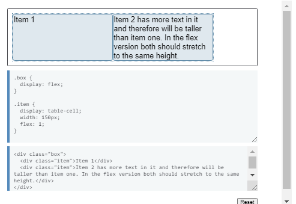
The vertical-align property
The live example below demonstrates use of the vertical-align
property along with display: inline-block. Both display: table-cell
and display: inline-block allow for the use of this property. Use of
vertical-align enables vertical alignment prior to flexbox. The
property is ignored by flexbox and so you can use it in conjunction
with display: table-cell or display: inline-block as a fallback and
then safely use box alignment properties in flexbox instead.
Feature Queries and flexbox
You can use feature queries to detect flexbox support:
@supports (display: flex) { // code for supporting browsers }
Note that Internet Explorer 11 does not support feature queries yet
does support flexbox. If you decide the IE11 implementation is too
buggy and you wish to serve it the fallback layout then you could
use feature queries to serve flexbox rules only to those browsers
with good flexbox support. Remember that if you want to include
versions of browsers that had vendor-prefixed flexbox you would need
to include the prefixed version in your feature query. The following
feature query would include UC Browser, which supports feature
queries and old flexbox syntax, prefixed:
@supports (display: flex) or (display: -webkit-box) { // code for
supporting browsers }
For more information about using Feature Queries see Using Feature
Queries in CSS on the Mozilla Hacks blog.
Conclusion
While I've spent some time in this guide going through potential
issues and fallbacks, flexbox is very much ready for you to be using
in production work. This guide will help you in those cases where
you do come across an issue or have the requirement to support older
browsers.